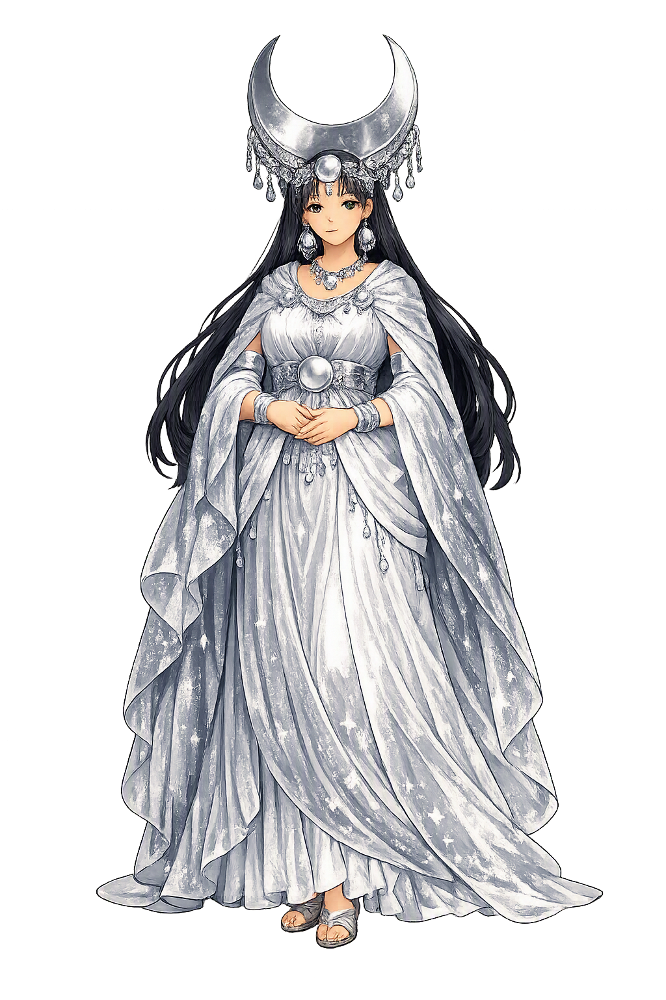

Stories of Mama Quilla
Mama Quilla's mythology comes through the colonial chroniclers — Cobo above all — who recorded a functioning state theology: the moon as mother, wife, and calendar. The tradition offers genealogy rather than epic, and it is richest where the moon meets the people — in the founding legend, the eclipse rites, and the silver shrine.
The chroniclers — Cobo (Historia del Nuevo Mundo, Book 13) most fully, Polo de Ondegardo and Murúa in agreement — make Mama Quilla the sister and wife of Inti, the Sun. The pairing is cosmic administration: two lights of opposite temper and opposite metal, gold and silver, day-side and night-side, ruling the sky as the emperor and Coya ruled the earth. The Coya embodied the correspondence on earth: her title, her silver ornaments, and her seat beside the emperor all repeated the sky's arrangement at court scale, as the chroniclers noted with visible discomfort. The sibling-marriage, startling to Europeans,The sibling-marriage, startling to Europeans, marked the gods as the model of the dynasty's own endogamy — the Inca married his sister the Coya as Inti married the Moon. The theology reads like a constitution written in sky: what is highest in heaven licenses what is highest on earth.
From the union of Sun and Moon came Manco Cápac and his sister-wife Mama Ocllo, who were sent from the cave of origin to find the place where a golden staff would sink into the ground — the valley of Cuzco (Cobo, Book 13; the parallel accounts of Murúa and the Sarmiento de Gamboa tradition). There they taught the people to plant, weave, and worship, and there the Inca dynasty began. Later empire converted the genealogy into policy: marriages among kin kept the founding blood undiluted, so the moon's marriage quietly licensed the palace's. Mama Quilla is thus not a background figureMama Quilla is thus not a background figure but the dynasty's own mother: every emperor's claim ran through her, and the Coya her daughters-in-line embodied her office. The myth is political at its root — a capital city justified as a family homestead of the moon.
When the moon darkened, the Inca believed a jaguar (otorongo) was seizing her — and the whole city responded. Cobo describes the rite: a great noise of shouting, drums, and trumpets, dogs loosed and beaten toward the sky, weapons brandished, all to frighten the beast away; pregnant women hid, fearing the eclipse's shadow would mark their unborn children. The same vigilance watched the sun's darkening, rarer and grander; court astronomers observed both lights nightly, their whole science bent toward early warning. Murúa ties such omensMurúa ties such omens to the empire's anxieties, and chroniclers report an eclipse among the portents before Huayna Capac's death. The rite is theology in action: the sky is alive with predators, and the people's noise is their part of the hunt — cosmic defense as civic duty, performed by an entire city at the top of its lungs.
In the Coricancha, the golden temple of Cuzco, Mama Quilla's chamber faced the Sun's — walls sheathed in silver, her image of silver with a disc like the full moon, served by the consecrated women (mamakuna) and girls (ñustakuna) whose order she patronized (Cobo, Book 13; Polo). Cobo says her image showed a woman with a great silver disc at her breast — the full moon worn like a heart — and that white maize and shellfish were laid before her. There her calendar was kept:There her calendar was kept: the priests of the moon tracked her phases to time the festivals — among them the great moon-festival (Coya Raymi, in the month of her honor) that closed the planting season. The shrine made the theology tactile: silver for the night goddess set against gold for the day god, the two metals dividing the temple as the two lights divide the sky.
Moon
Mama Quilla — Mother Moon — is the Inca goddess of the moon, sister and wife of the Sun, mother of the dynasty's founders, and keeper of the calendar. Silver was her metal, the night her realm, and the Coya — the queen — her living image on earth.
The moon as mother — her name itself, and her office over fertility, women, and the night.
She governed the lunar months and festival calendar — the waxing and waning that set the empire's rhythm.
Wed to Inti, her brother — the paired lights of sky, with gold for him and silver for her.
From her and Inti came Manco Cápac and Mama Ocllo, sent to found Cuzco and the Inca line.
From the original script to the living URL
Mama Quilla
The name survives in scholarly transliteration. Mama Quilla is the standard Incan romanisation, documented in academic sources — “Mother moon”. Because the spelling uses only Latin letters, the form is the same in both ASCII and Unicode.
No indigenous writing system is securely attested for individual incan names. The form shown is a modern scholarly transliteration.
mamaquilla
The plain mamaquilla form is identical to the Unicode restoration. Because this name is already written in Latin letters, no diacritics, stress, or script information were lost — only capitalization differs.
Mama Quilla
The Unicode restoration does not need to recover lost marks for Mama Quilla. Its value is canonical spelling and consistent cataloguing, not the reconstruction of erased orthography. The domain is readable as-is to both DNS and humanity.
Mama Quilla.com
This restoration is written entirely in ASCII letters — no Punycode encoding stands between Mama Quilla and the DNS. The domain reads identically to machines and to human eyes.
Owned, ideal, and ASCII forms of Mama Quilla
Mama Quilla
The full Unicode restoration. mama quilla.com is not in the PuniCodex collection — it is watched for release; if it drops, this temple upgrades to an owned flagship.
mamaquilla
The plain ASCII fallback — what DNS and legacy systems see.
How Mama Quilla was spoken
How Mama Quilla is preserved in writing
No indigenous writing system is securely attested for individual incan names. The form shown is a modern scholarly transliteration.
Contribute scholarly provenance →Mama Quilla embodies the Andean genius for pairing. The Inca universe is built of twinned powers — sun and moon, gold and silver, hanan and hurin, emperor and Coya — and she is the night half of the founding pair. Where the sun commands, the moon counts: her office is time, the patient arithmetic of waxing and waning by which planting, festival, and warfare were scheduled. That the dynasty's mother is the moon rather than the sun is a quiet but profound statement: empire's light may blaze, but its continuity — months, gestations, harvests — is feminine and lunar. Her eclipse myth sharpens the point: the moon's darkness is the moment the whole community must shout. A civilization, the goddess suggests, is measured not by its triumphs but by whether it makes noise for its mother when she is attacked.
Enter Extended Lore